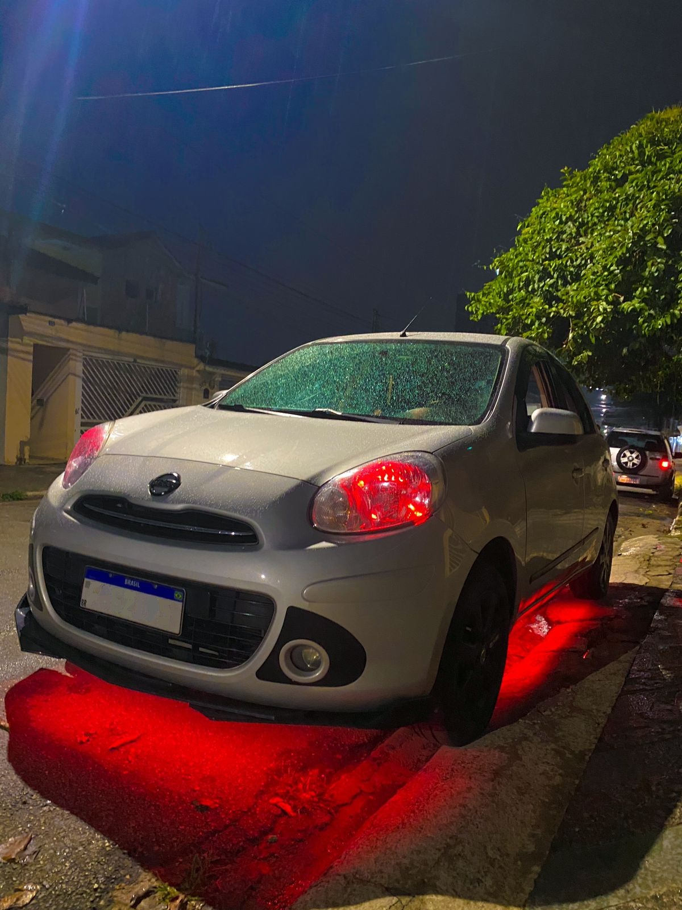
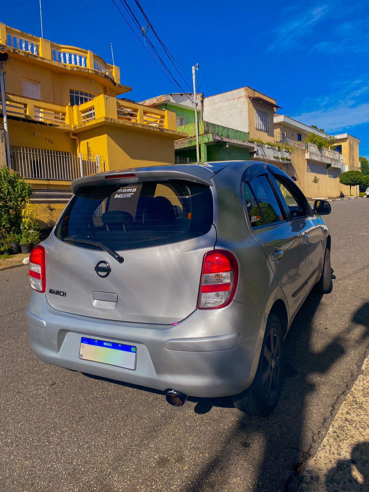
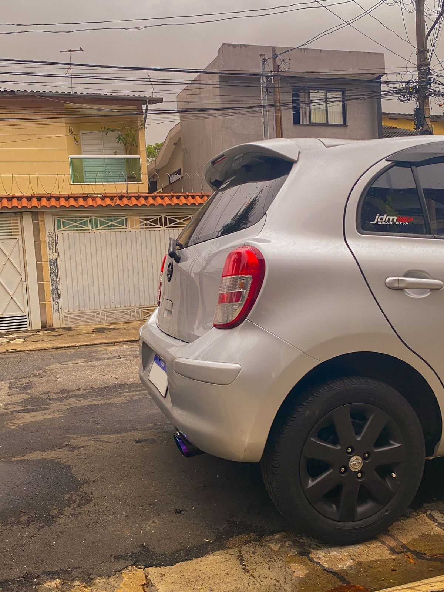
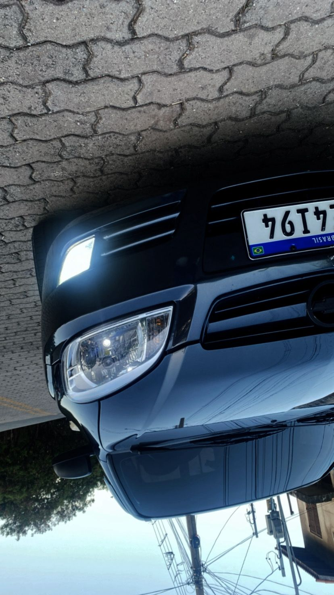
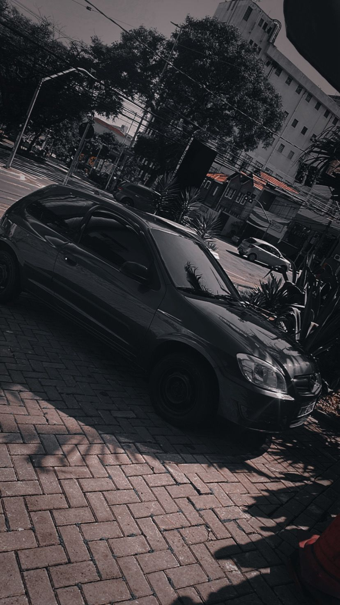
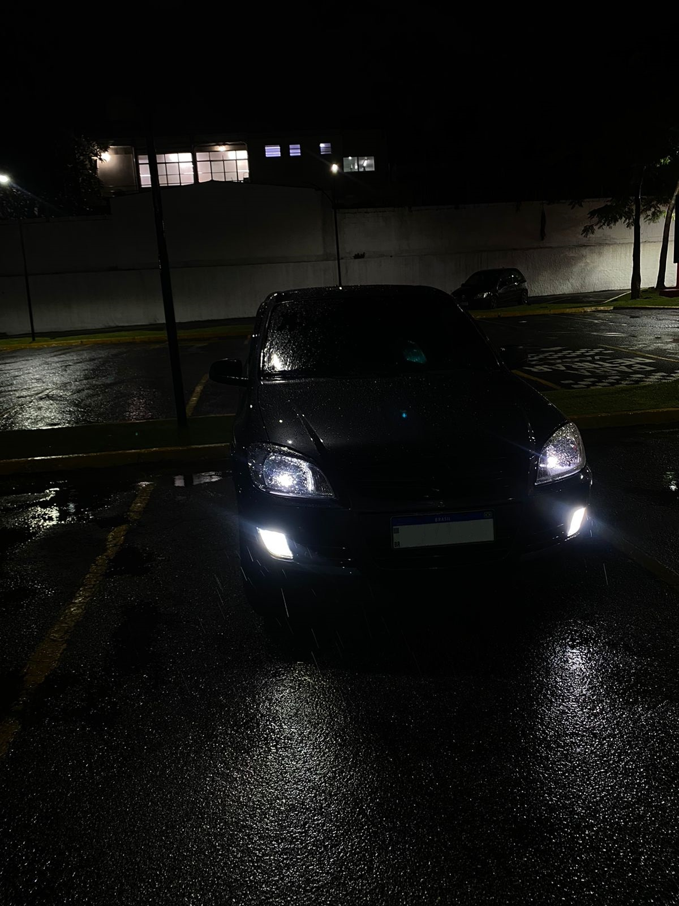
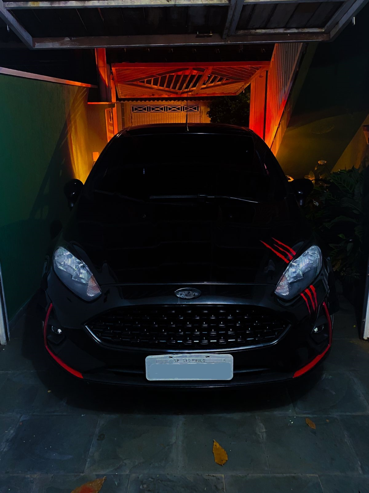
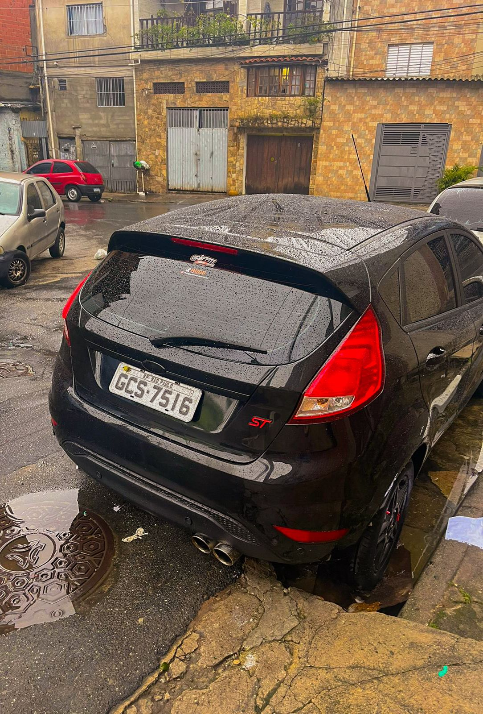
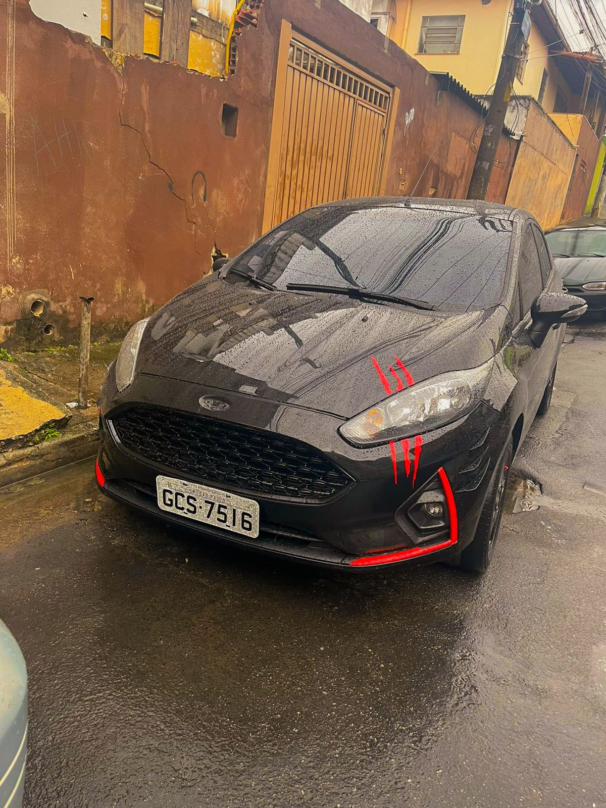

Carros da Tropa
Nissan March
  - Potência do Motor: Aproximadamente 145 cavalos após modificações
- Aceleração 0-100 km/h: Aproximadamente 7 segundos após modificações
- Velocidade Máxima: Aproximadamente 220 km/h após modificações
- Diâmetro dos Discos de Freio: 280 mm na frente e 260 mm na traseira após instalação de freios de alto desempenho
Celtinha
  - Potência do Motor: Aproximadamente 110 cavalos após modificações
- Aceleração 0-100 km/h: Aproximadamente 10 segundos após modificações
- Velocidade Máxima: Aproximadamente 190 km/h após modificações
New Fiesta
  
- Potência do Motor: Aproximadamente 150 cavalos após modificações
- Aceleração 0-100 km/h: Aproximadamente 7 segundos após modificações
- Velocidade Máxima: Aproximadamente 220 km/h após modificações
- Altura da Suspensão: Redução de 30 mm após instalação de suspensão esportiva